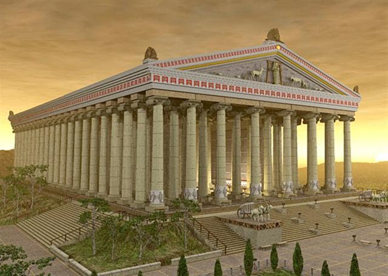

3.วิหารแห่งอาร์ทิมิส (Temple of Artemis at Ephesus)
สร้างด้วยหินอ่อน เลียบแบบศิลปะแบบกรีก เพื่อถวายเทพเจ้าอาร์เทมีส (เทพเจ้าแห่งดวงจันทร์ของกรีก) ผู้มาจากสวรรค์ ผู้ช่วยชาวเมืองให้พ้นจากหายนะและภัยพิบัติได้ อยู่ในเมืองอีเฟซุส บนชายฝั่งแห่งหนึ่ง (ซึ่งปัจจุบันนี้ คือประเทศตุรกี) ในรัชสมัยของกษัตริย์อเล็กซานเดอร์แห่งกรีก จัดเป็นวิหารที่สวยงามแห่งหนึ่งจนกลายเป็นที่รู้จักว่า เป็นสิ่งมหัศจรรย์ของโลกในยุคเก่า วิหารนี้มีเนื้อที่ถึง 54,720 ตารางฟุต ตัวอาคารมีความกว้างถึง 400 ฟุต บริเวณโดยรอบวัดแห่งนี้กินเนื้อที่เกือบ 2 เอเคอร์ และมีเสาหินตั้งตระหง่านรอบตัวอาคารมากกว่า 100 เสาหิน แต่ละเสาหินมีเส้นผ่านศุนย์กลาง 6 ฟุต ความสูง 60 ฟุต หลังคาปูด้วยกระเบื้องหินอ่อน ตัววิหารเคยถูกไฟไหม้เสียหายครึ่งหนึ่งแต่ได้รับการซ่อมแซมใหม่โดยกษัตริย์อเล็กซานเดอร์
Create at 550 BC